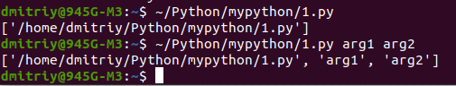
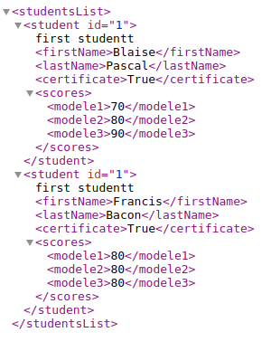
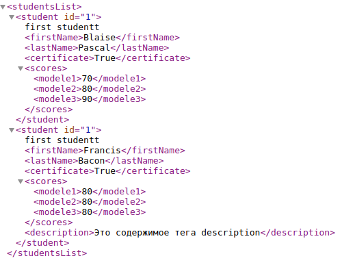
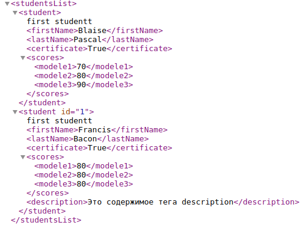
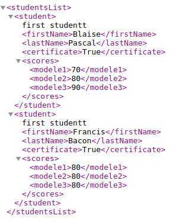
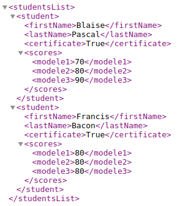
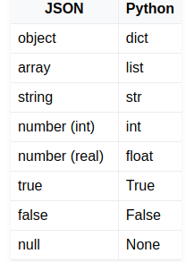
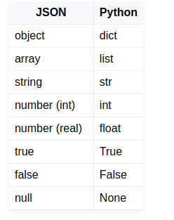
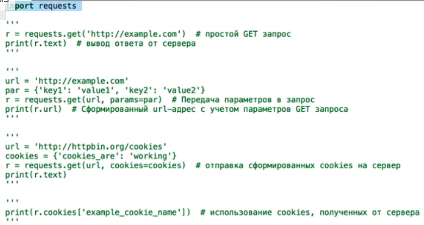

Обзор стандартной библиотеки
Ссылки: Обзор стандартной библиотекиСписок модулей стандартной библиотеки
Модули
На сайте Индекс пакетов Python (PyPI) - это хранилище программного обеспечения для языка программирования Python. находятся тысячи готовых пакетов. Скачивают и устанавливают их обычно с помощью питоновского менеджера программ pip. Обычно pip уже установлен. Чтобы проверить это и заодно узнать версию, служит команда:
pip3 --versionУ меня pip 20.0.2 from /usr/lib/python3/dist-packages/pip (python 3.8)
Для того, чтобы установить какую-нибудь библиотеку из Python Package Index (например пакет simple-crypt из следующей задачи), необходимо запустить команду:
$ pip install simple-cryptЕсли операционная система linux скажет, что вам не хватает прав для данной операции, используйте команду:
$ sudo pip install simple-crypt========================================================================================================
Помимо создания собственных модулей python содержит большое количество собственных (встроенных) модулей, называемых библиотекой стандартных модулей. Встроенные в смысле, что эти модули в отличии от модулей других библиотек не нужно устанавливать.
Модули стандартной библиотеки можно условно разбить на группы по тематике.
- Сервисы периода выполнения.
Модули: sys, atexit, copy, traceback, math, cmath, random, time, calendar, datetime, sets, array, struct, itertools, locale, gettext.Модуль sys
Ссылки: Разбираем модуль sysМодуль sys предоставляет системе особые параметры и функции.
- sys.argv
Значение sys.argv – это список аргументов командной строки, которые причастны к скрипту Python. Первый аргумент, argv[0], имеет аналогичное скрипту Python наименование. В зависимости от платформы, на которой вы работаете, первый аргумент может содержать полный путь к скрипту или к названию файла. Для дополнительных деталей обратитесь к документации. А тем временем, попробуем поработать с парочкой примеров, чтобы познакомиться с этим инструментом:
В интерпретаторе выполним:>>> import sys >>> print(sys.argv) ['']
Получили пустой список, потому что никакую программу не запускали.Если создадим скрипт 1.py с кодом:
import sys print(sys.argv)
и запустим его с командной строки:
 - sys.executable
- sys.exit
- sys.modules
- sys.path
- sys.platform
- sys.stdin/stdout/stderr
Модуль subprocess
Ссылки: Модуль subprocess — Работаем с процессамМодуль subprocess дает разработчику возможность запускать процессы программ из Python. Другим словами, вы можете запускать приложения и передавать им аргументы при помощи модуля subprocess. Модуль subprocess был внедрен в Python 2.4 для замены настроек вызовов модуля os, таких как os.popen, os.spawn и os.system, а также для замены popen2 и старых командных модулей.
- Функция вызова call
Модуль subprocess содержит функцию под названием call. Эта функция позволяет вам вызывать другую программу, дожидаться завершения команды и вернуть код возврата. Она принимает один или несколько аргументов, а также следует ключевым аргументам (с их значениями): stdin=None, stdout=None, stderr=None, shell=False.
Взглянем на простой пример:import subprocess # Для Windows subprocess.call("notepad.exe") # Для linux subprocess.call("gedit")Если вы запустите этот код на машине, которая работает на Windows Python, вы увидите открывшийся блокнот. Обратите внимание на то, что IDLE (наверное это имя интерпретатора) ожидает, пока вы закроете блокнот, после чего вернет нулевой код (0).
Это значит, что код был выполнен успешно. Если вы получите что-либо, что не является ноль, то вы столкнулись с какой-то ошибкой.Метод call также принимает аргументы, для передачи программе, которую вы выполняете. Давайте взглянем на то, как это работает:
import subprocess code = subprocess.call(["ping", "www.yahoo.com"])
В ответе получим результат пингования сайта.
Обратите внимание на то, что в данном примере мы передали список аргументов. Первый объект в списке это программа, которую мы хотим вызвать. Все остальное в списке – это аргументы, которые мы хотим передать программе. Так что в данном примере мы выполняем пинг на сайте Yahoo. Также обратите внимание на то, что код возврата нулевой, так что все прошло успешно.
2. Функция run()
Функция subprocess.run() может выполнять команды терминала (башевские) и затем выводить результат выполнения команды в виде строки.
Пример:#!/usr/bin/env python3 import subprocess, locale procObj = subprocess.run(['ls', '-al'], stdout=subprocess.PIPE) outputStr = procObj.stdout.decode(locale.getdefaultlocale()[1]) print(outputStr)
Вывод в терминале:
итого 8072 drwxrwxr-x 4 dmitriy dmitriy 4096 янв 20 15:29 . drwxr-xr-x 49 dmitriy dmitriy 4096 янв 20 14:59 .. -rwxrw-r-- 1 dmitriy dmitriy 195 янв 20 15:29 1.py drwxrwxr-x 2 dmitriy dmitriy 4096 окт 7 12:03 .ipynb_checkpoints drwxrwxr-x 5 dmitriy dmitriy 4096 янв 20 14:34 mypython -rw-rw-r-- 1 dmitriy dmitriy 8243089 янв 20 15:25 Свейгарт Эл - Python. Чистый код для продолжающих
Функции subprocess.run() передается список ['ls', '-al']. Он содержит имя команды ls , за которым следуют аргументы в виде отдельных строк. Обратите внимание: с передачей ['ls -al'] функция работать не будет. Вывод команды хранится в виде строки в outputStr. Электронная документация функций subprocess run() и locale.getdefaultlocale() даст вам лучшее представление о том, как они действуют, причем с ними ваш код будет работать в любой операционной системе, где функционирует Python.
================================================================================================================
Модуль copy содержит функции для копирования объектов.В модулях math cmath собраны математические функции для действительных и комплексных аргументов.
Модуль random генерирует псевдослучайные числа для нескольких различных распределений.
модуль time дает функции для получения текущего времени и преобразования форматов времени.
Модуль sets реализует тип данных для множеств.
Модули array и struct реализуют низкоуровневый массив и структуру данных. Основное их назначение - разбор двоичных форматов данных.
Модуль itertools содержит набор функций для работы с итераторами. Итераторы позволяют работать с данными последовательно, как если бы они получались в цикле. Альтернативный подход - использование списков для хранения промежуточных результатов - требует подчас большого количества памяти, тогда как использование итераторов позволяет получать значения на момент, когда они действительно требуются для дальнейших вычислений.
Модуль locale применяется для работы с культурной средой. В конкретной культурной среде могут использоваться свои правила для написания чисел, валют, времени и даты и т.п.
Модуль gettext При интернационализации программы важно не только предусмотреть возможность использования нескольких культурных сред, но и перевод сообщений и меню программы на соответствующий язык.
- sys.argv
- Поддержка цикла разработки. Модули: pdb, hotshot, profile, unittest, pydoc. Пакеты docutils, distutils.
Модули этого раздела помогают поддерживать документацию, производить регрессионное тестирование, отлаживать и профилировать программы на Python, а также обслуживают распространение готовых программ, создавая среду для конфигурирования и установки пакетов. - Взаимодействие с ОС (файлы, процессы). Модули: os, os.path, getopt, glob, popen2, shutil,
select, signal, stat, tempfile.
Модуль os
Модуль os предоставляет множество функций для работы с операционной системой, причём их поведение, как правило, не зависит от ОС, поэтому программы остаются переносимыми. Здесь будут приведены наиболее часто используемые из них.Будьте внимательны: некоторые функции из этого модуля поддерживаются не всеми ОС.
os.name - имя операционной системы. Доступные варианты: 'posix', 'nt', 'mac', 'os2', 'ce', 'java'.
os.environ - словарь переменных окружения. Изменяемый (можно добавлять и удалять переменные окружения).
os.getlogin() - имя пользователя, вошедшего в терминал (Unix).
os.getpid() - текущий id процесса.
os.uname() - информация об ОС. возвращает объект с атрибутами: sysname - имя операционной системы, nodename - имя машины в сети (определяется реализацией), release - релиз, version - версия, machine - идентификатор машины.
os.access(path, mode, *, dir_fd=None, effective_ids=False, follow_symlinks=True) - проверка доступа к объекту у текущего пользователя. Флаги: os.F_OK - объект существует, os.R_OK - доступен на чтение, os.W_OK - доступен на запись, os.X_OK - доступен на исполнение.
os.chdir(path)
Смена текущей директории.
path - путь к каталогу в виде строки.
Возвращает None. Чтобы узнать, что изменилась рабочая папка, лучше применить функцию os.getcwd(): print(os.getcwd())
Примеры использования:>>> import os >>> os.getcwd() # '/home/docs-python' >>> os.chdir(os.pardir) >>> os.getcwd() # '/home'
os.chmod(path, mode, *, dir_fd=None, follow_symlinks=True) - смена прав доступа к объекту (mode - восьмеричное число).
os.chown(path, uid, gid, *, dir_fd=None, follow_symlinks=True) - меняет id владельца и группы (Unix).
os.getcwd() - текущая рабочая директория.
os.link(src, dst, *, src_dir_fd=None, dst_dir_fd=None, follow_symlinks=True) - создаёт жёсткую ссылку.
os.listdir(path=".") - список файлов и директорий в папке.
os.mkdir(path, mode=0o777, *, dir_fd=None) - создаёт директорию. OSError, если директория существует.
os.makedirs(path, mode=0o777, exist_ok=False) - создаёт директорию, создавая при этом промежуточные директории.
os.remove(path, *, dir_fd=None) - удаляет путь к файлу.
os.rename(src, dst, *, src_dir_fd=None, dst_dir_fd=None) - переименовывает файл или директорию из src в dst.
os.renames(old, new) - переименовывает old в new, создавая промежуточные директории.
os.replace(src, dst, *, src_dir_fd=None, dst_dir_fd=None) - переименовывает из src в dst с принудительной заменой.
os.rmdir(path, *, dir_fd=None) - удаляет пустую директорию.
os.removedirs(path) - удаляет директорию, затем пытается удалить родительские директории, и удаляет их рекурсивно, пока они пусты.
os.symlink(source, link_name, target_is_directory=False, *, dir_fd=None) - создаёт символическую ссылку на объект.
os.sync() - записывает все данные на диск (Unix).
os.truncate(path, length) - обрезает файл до длины length.
os.utime(path, times=None, *, ns=None, dir_fd=None, follow_symlinks=True) - модификация времени последнего доступа и изменения файла. Либо times - кортеж (время доступа в секундах, время изменения в секундах), либо ns - кортеж (время доступа в наносекундах, время изменения в наносекундах).
os.walk(top, topdown=True, onerror=None, followlinks=False) - генерация имён файлов в дереве каталогов, сверху вниз (если topdown равен True), либо снизу вверх (если False). Для каждого каталога функция walk возвращает кортеж (путь к каталогу, список каталогов, список файлов).
os.system(command) - исполняет системную команду, возвращает код её завершения (в случае успеха 0).
os.urandom(n) - n случайных байт. Возможно использование этой функции в криптографических целях.
os.path
Модуль, реализующий некоторые полезные функции на работы с путями.
os.path является вложенным модулем в модуль os, и реализует некоторые полезные функции для работы с путями.- os.path.abspath(path) - возвращает нормализованный абсолютный путь.
- os.path.basename(path) - базовое имя пути (эквивалентно os.path.split(path)[1]).
- os.path.commonprefix(list) - возвращает самый длинный префикс всех путей в списке.
- os.path.dirname(path) - возвращает имя директории пути path.
- os.path.exists(path) - возвращает True, если path указывает на существующий путь или дескриптор открытого файла.
- os.path.expanduser(path) - заменяет ~ или ~user на домашнюю директорию пользователя.
- os.path.expandvars(path) - возвращает аргумент с подставленными переменными окружения ($name или ${name}
заменяются переменной окружения name). Несуществующие имена не заменяет. На Windows также заменяет %name%.
- os.path.getatime(path) - время последнего доступа к файлу, в секундах.
- os.path.getmtime(path) - время последнего изменения файла, в секундах.
- os.path.getctime(path) - время создания файла (Windows), время последнего изменения файла (Unix).
- os.path.getsize(path) - размер файла в байтах.
- os.path.isabs(path) - является ли путь абсолютным.
- os.path.isfile(path) - является ли путь файлом.
- os.path.isdir(path) - является ли путь директорией.
- os.path.islink(path) - является ли путь символической ссылкой.
- os.path.ismount(path) - является ли путь точкой монтирования.
- os.path.join(path1[, path2[, ...]]) - соединяет пути с учётом особенностей операционной системы.
- os.path.normcase(path) - нормализует регистр пути (на файловых системах, не учитывающих регистр, приводит путь к
нижнему регистру).
- os.path.normpath(path) - нормализует путь, убирая избыточные разделители и ссылки на предыдущие директории. На
Windows преобразует прямые слеши в обратные.
- os.path.realpath(path) - возвращает канонический путь, убирая все символические ссылки (если они поддерживаются).
- os.path.relpath(path, start=None) - вычисляет путь относительно директории start (по умолчанию - относительно
текущей директории).
- os.path.samefile(path1, path2) - указывают ли path1 и path2 на один и тот же файл или директорию.
- os.path.sameopenfile(fp1, fp2) - указывают ли дескрипторы fp1 и fp2 на один и тот же открытый файл.
- os.path.split(path) - разбивает путь на кортеж (голова, хвост), где хвост - последний компонент пути, а голова -
всё остальное. Хвост никогда не начинается со слеша (если путь заканчивается слешем, то хвост пустой). Если слешей в пути нет,
то пустой будет голова.
- os.path.splitdrive(path) - разбивает путь на пару (привод, хвост).
- os.path.splitext(path) - разбивает путь на пару (root, ext), где ext начинается с точки и содержит не более одной
точки.
- os.path.supports_unicode_filenames - поддерживает ли файловая система Unicode.
Почему вам следует использовать pathlib
Модуль glob
Модуль glob в Python предоставляет удобный способ искать файлы с определенными шаблонами.Функция glob.glob() используется для поиска всех файлов, соответствующих определенному шаблону. В качестве аргумента она принимает строку с шаблоном.
Пример использования:import glob files = glob.glob('*.txt') print(files)В данном случае мы ищем все файлы с расширением .txt в текущей директории. Результат будет представлен в виде списка.Если вы хотите искать файлы не только в текущей директории, но и во всех вложенных папках, используйте аргумент recursive=True.
Пример использования:import glob files = glob.glob('**/*.txt', recursive=True) print(files)Теперь функция glob.glob() будет искать файлы с расширением .txt в текущей директории и всех поддиректориях.В модуле glob поддерживаются следующие символы-шаблоны:
* — соответствует любому количеству символов (включая пустую строку) ? — соответствует одному любому символу [...] — соответствует одному из символов, заключенных в квадратные скобки (например, [abc] соответствует символам a, b или c)
Пример использования:import glob files = glob.glob('*[0-9].txt') print(files)В данном случае мы ищем все файлы, имя которых заканчивается на цифру и расширением .txt.Важно: символы-шаблоны работают только для имен файлов и папок, а не для их содержимого.
- Обработка текстов.
Модули: string, re, StringIO, codecs, difflib, mmap, sgmllib, htmllib, htmlentitydefs.
Пакет xml.-----------------------------------------------------------------------------------------------------------
Пакет xml
Ссылки: Как использовать Python для работы с XMLXML - это язык разметки текста в текстовых файлах с помощью тегов. Для работы с такими файлами служит пакет XML.
Библиотека xml.etree.ElementTree
Ссылки: Перевод документацииОдин из основных модулей для работы с XML в Python — это xml.etree.ElementTree. Он предоставляет функциональность для создания, редактирования и парсинга XML-файлов.
Примеры будем смотреть на основе example.xml:

Чтение xml-файлов
import xml.etree.ElementTree as ET tree = ET.parse('/home/dmitriy/Python/mypython/example.xml')# создаем древовидную структуру с функцией синтаксического анализа >>> print(tree) <xml.etree.ElementTree.ElementTree object at 0x7f4acf5b6400> root = tree.getroot() # получаем ее корневой элемент. Получив доступ к корневому узлу, мы можем легко перемещаться по Tree. >>> root <Element 'studentsList' at 0x7f4acf4c8400>Здесь мы импортируем модуль ElementTree, открываем файл example.xml, а затем получаем корневой элемент дерева XML.
мы>>> root <Element 'studentsList' at 0x7f4acf4c8400>
Можно прочитать example.xml обычным способом:>>> with open('/home/dmitriy/Python/mypython/example.xml') as f: ... for line in f: ... print(line.strip())И получим список строк из example.xml, но видимо нет инструментов для работы с этими тегами.Можно посмотреть корневой тег с атрибутами:
>>> print(root.tag, root.attrib) studentsList {}Чтение строки xml-формата
xml_string = ''' <data> <country name="Russia"> <city>Moscow</city> </country> <country name="USA"> <city>New York</city> </country> </data> ''' # Загрузка XML-строки в объект ElementTree root = ET.fromstring(xml_string) # Итерация по элементам for country in root.findall('country'): name = country.get('name') city = country.find('city').text print(f'{name}: {city}')Функция fromstring(): создать элемент из строки
Вы можете создать элемент или дерево элементов из строки, содержащей XML, с помощью этой функции; она возвращает новый экземпляр Element, представляющий весь этот XML. etree.fromstring(s) где s - строка.Посмотреть определенный тег по индексу:
Нумерация тегов начинается с нуля.print(root[0])
Здесь root[0] - это первый тег внутри корневого. Им является тег 'student'. Чтобы посмотреть содержимое этого тега, используется метод text.>>> print(root[0].text) first studentt >>> print(root[0][1]) <Element 'lastName' at 0x7f4acf4e31d0> >>> print(root[0][1].text) Pascal
Сначало смотрим второй тег внутри первого от корневого, а потом смотрим его содержимое.Обход элементов XML
Мы можем обойти все элементы XML-дерева, используя метод iter():
Это выведет название и атрибуты каждого элемента в дереве.for elem in root.iter(): print(elem.tag, elem.attrib) Вывод: studentsList {} student {'id': '1'} firstName {} lastName {} certificate {} scores {} modele1 {} modele2 {} modele3 {} student {'id': '1'} firstName {} lastName {} certificate {} scores {} modele1 {} modele2 {} modele3 {}Увидеть только теги с атрибутами:
>>> for elem in root: ... print(elem.tag, elem.attrib) ... student {'id': '1'} student {'id': '1'}Узнать количество определенных элементов (тегов):>>> for elem in root.iter('scores'): ... print(elem) ... <Element 'scores' at 0x7f4ace04da40> <Element 'scores' at 0x7f4ace05b9a0>Внутри нашего example.xml находится два тега 'scores'Операции с содержимым тегов:
>>> for element in root.iter('scores'): ... score_sum = 0 ... for child in element: ... score_sum += float(child.text) ... print(score_sum) ... 240.0 240.0Узнали суммарную сумму баллов для каждого студента.Поиск элементов по тегу
Чтобы найти все элементы с определенным тегом, можно использовать метод findall():for elem in root.findall('tag_name'): print(elem.attrib)Это выведет атрибуты всех элементов с тегом tag_name.Изменение атрибутов и текста элементов
Мы можем изменить атрибуты и текст элементов следующим образом:for elem in root.iter('tag_name'): elem.set('attribute_name', 'new_value') elem.text = 'new_text'Это изменит атрибут attribute_name и текст у всех элементов с тегом tag_name.Создание новых элементов (тегов)
from xml.etree import ElementTree # импорт необходимого ElementTree description = ElementTree.Element('description') # создаем тег description description.text = 'Это содержимое тега description' # содержимое этого тега root[1].append(description) # этот тег будет помещен внутри 2 тега от корневого tree.write('/home/dmitriy/Python/mypython/copy_example.xml') # записываем измененияРезультат:
Удаление
Удаление атрибута
Допустим я хочу удалить из тега student его атрибут 'id = "1"' и содержимое "first student".root[0].attrib.pop('id', None) '1' tree.write('/home/dmitriy/Python/mypython/copy_example.xml')Результат:
Удалили из root[0] (первый тег от корня) атрибут.
>>> root[1].attrib.pop('id', None) '1' tree.write('/home/dmitriy/Python/mypython/copy_example.xml')Удалили атрибут у второго тега student.Удаление одного подэлемента
Один конкретный подэлемент можно удалить с помощью remove функции. Эта функция должна указать узел, который мы хотим удалить.Удалим тег description у второго тега student, это root[1][4]:
root[1].remove(root[1][4]) tree.write('/home/dmitriy/Python/mypython/copy_example.xml')Результат:
root[0].clear() - удалит все теги внутри root[0]
Удаление текстового содержимого:
Удалить у тегов root[0] и root[1] текстовое содержимое:root[0].text = None tree.write('/home/dmitriy/Python/mypython/copy_example.xml') root[1].text = None tree.write('/home/dmitriy/Python/mypython/copy_example.xml')Результат:
Сохранение изменений в файл
Чтобы сохранить изменения в файл, мы можем использовать метод write():tree.write('/home/dmitriy/Python/mypython/example.xml')Это сохранит измененное дерево XML в файл example.xml.Сделал изменения в example.xml, обновил страницу в браузере '/home/dmitriy/Python/mypython/example.xml', ничего не изменилось. Тогда
>>> tree.write('/home/dmitriy/Python/mypython/example.xml')и снова обновил страницу, страница изменилась.Создать копию файла example.xml:
tree.write('/home/dmitriy/Python/mypython/copy_example.xml')По указанному пути будет создан файл copy_example.xml - копия example.xmlБиблиотека lxml
Еще одна популярная библиотека для работы с XML в Python — это lxml. Она предоставляет более быстрый и гибкий интерфейс для работы с XML-данными.Для установки библиотеки lxml, выполните следующую команду:
pip install lxml
Основы работы с lxml аналогичны xml.etree.ElementTree. Однако, библиотека lxml также предоставляет дополнительные возможности, такие как поддержка XPath и валидация схемы.from lxml import etree tree = etree.parse('example.xml') root = tree.getroot() result = root.xpath('//tag_name[@attribute_name="value"]')Здесь мы используем метод xpath() для поиска всех элементов с тегом tag_name, у которых атрибут attribute_name равен «value».Пример:
from lxml import etree import requests res = requests.get("http://docs.python.org/3/") print(res.status_code) #статус-код страницы print(res.headres["Content-Type"]) #тип данных, чтобы убедиться, что работаем с HTML #Парсер - ПО, выделяющее определенные части информации из массива данных по заданным правилам parser = etree.HTMLParser() #parcer позволит работать с теми данными в виде HTML, которые плохо сформированы root = etree.fromstring(res.text, parser) #передача данных в формате HTML в переменную #print(root) for element in root.iter("a"): #перебираем все элементы в поддереве корня, которые являются атрибутом "a" print(element, element.attrib) #вывод элементов и их атрибутов------------------------------------------------------------------------------------------------------------
Модуль collections
Ссылки: Модуль collectionsМетод Counter:
Counter — это подкласс словаря, который предназначен для подсчета количества элементов. Он принимает итерируемый объект и возвращает словарь с количеством каждого элемента.from collections import Counter words = ["apple", "banana", "orange", "apple", "banana", "apple"] word_count = Counter(words) print(word_count) # Counter({'apple': 3, 'banana': 2, 'orange': 1})defaultdict:
defaultdict — это подкласс словаря, который используется, когда нужно предоставить значение по умолчанию для ключей, которые еще не существуют в словаре.from collections import defaultdict d = defaultdict(int) d["a"] += 1 d["b"] += 2 print(d) # defaultdict(<class 'int'>, {'a': 1, 'b': 2})-------------------------------------------------------------------------------------------------------------Модуль re
Функции этого модуля:- re.match(pattern, stroka)
Ищет совпадает ли шаблон (pattern) с началом нашей строки. - re.fullmatch(pattern, string)
Проверить, подходит ли строка string под шаблон pattern>>> match = re.fullmatch(r'\d\d\D\d\d', r'12-12') >>> print('YES' if match else 'NO') YES >>> match = re.fullmatch(r'\d\d\D\d\d', r'Т. 12-12') >>> print('YES' if match else 'NO') NO - re.split(pattern, string, maxsplit=0)
Этот метод разделяет строку по заданному шаблону.result = re.split(r'y', 'Analytics') print result Результат: ['Anal', 'tics']
В примере мы разделили слово «Analytics» по букве «y». Метод split() принимает также аргумент maxsplit со значением по умолчанию, равным 0. В данном случае он разделит строку столько раз, сколько возможно, но если указать этот аргумент, то разделение будет произведено не более указанного количества раз. Давайте посмотрим на примеры Python RegEx:result = re.split(r'i', 'Analytics Vidhya') print result Результат: ['Analyt', 'cs V', 'dhya'] # все возможные участки.
result = re.split(r'i', 'Analytics Vidhya',maxsplit=1) print result Результат: ['Analyt', 'cs Vidhya']
Мы установили параметр maxsplit равным 1, и в результате строка была разделена на две части вместо трех.Если в шаблоне нет группирующих скобок, то re.split работает очень похожим образом на str.split. А вот если группирующие скобки в шаблоне есть, то между каждыми разрезанными строками будут все соответствия каждой из подгрупп.
import re print(re.split(r'(\s*)([+*/-])(\s*)', r'12 + 13*15 - 6')) # -> ['12', ' ', '+', ' ', '13', '', '*', '', '15', ' ', '-', ' ', '6']
В некоторых ситуация эта возможность бывает чрезвычайно удобна! Например, достаточно из предыдущего примера убрать лишние группы, и польза сразу станет очевидна!import re print(re.split(r'\s*([+*/-])\s*', r'12 + 13*15 - 6')) # -> ['12', '+', '13', '*', '15', '-', '6']
- re.search(pattern, string)
Найти в строке string первую строчку, подходящую под шаблон pattern
Примеры:>>> import re >>> match = re.search(r'\d\d\D\d\d', r'Телефон 123-12-12') >>> print(match[0] if match else 'Not found') 23-12 >>> match = re.search(r'\d\d\D\d\d', r'Телефон 1231212') >>> print(match[0] if match else 'Not found') Not found
- re.findall(pattern, string)
Найти в строке string все непересекающиеся шаблоны pattern>>> print(re.findall(r'\d\d\.\d\d\.\d{4}', r'Эта строка написана 19.01.2018, а могла бы и 01.09.2017')) ['19.01.2018', '01.09.2017']Если в шаблоне есть группирующие скобки, то вместо списка найденных подстрок будет возвращён список кортежей, в каждом из которых только соответствие каждой группе. Это не всегда происходит по плану, поэтому обычно нужно использовать негруппирующие скобки (?:...).
import re print(re.findall(r'([a-z]+)(\d*)', r'foo3, im12, go, 24buz42')) # -> [('foo', '3'), ('im', '12'), ('go', ''), ('buz', '42')] - re.finditer(pattern, string)
Итератор по всем непересекающимся шаблонам pattern в строке string (выдаются match-объекты)for m in re.finditer(r'\d\d\.\d\d\.\d{4}', r'Эта строка написана 19.01.2018, а могла бы и 01.09.2017'): print('Дата', m[0], 'начинается с позиции', m.start()) # -> Дата 19.01.2018 начинается с позиции 20 # -> Дата 01.09.2017 начинается с позиции 45 - re.sub(pattern, replace, string, count=0, flags=0)
заменяет символы по заданному паттерну на заданные символы и возвращает исправленную строку.
Параметры:pattern - регулярное выражение
replace - на что нужно заменить pattern
string - строка, к которой нужно применить регулярное выражение
count - необязательный аргумент, максимальное число вхождений, подлежащих замене. Если этот параметр опущен или равен нулю, то произойдет замена всех вхождений.
flags - флаги
Возвращаемое значение:Если совпадения есть - изменённая строка
string, если совпадений нетprint(re.sub(r'\d\d\.\d\d\.\d{4}', r'DD.MM.YYYY', r'Эта строка написана 19.01.2018, а могла бы и 01.09.2017')) # -> Эта строка написана DD.MM.YYYY, а могла бы и DD.MM.YYYY - stroka.re.group()
Искомая подстрока найдена. Чтобы вывести её содержимое, применим метод group() (мы используем «r» перед строкой шаблона, чтобы показать, что это «сырая» строка в Python):result = re.match(r'AV', 'AV Analytics Vidhya AV') print result.group(0) Результат: AV
- re.compile(pattern, repl, string)
Мы можем собрать регулярное выражение в отдельный объект, который может быть использован для поиска. Это также избавляет от переписывания одного и того же выражения.pattern = re.compile('AV') result = pattern.findall('AV Analytics Vidhya AV') print result result2 = pattern.findall('AV is largest analytics community of India') print result2 Результат: ['AV', 'AV'] ['AV']
Также есть методы start() и end() для того, чтобы узнать начальную и конечную позицию найденной строки.
result = re.match(r'AV', 'AV Analytics Vidhya AV') print result.start() print result.end() Результат: 0 2
- Многопоточные вычисления.
Модули: threading, thread, Queue.------------------------------------------------------------------------------------------------------------------
- Хранение данных. Архивация.
Модули: pickle, shelve, anydbm, gdbm, gzip, zlib, zipfile, bz2, csv, tarfile.
К этой категории отнесены модули, которые работают с внешними хранилищами данных.Модуль CSV
Ссылки: Работа с файлами в формате CSVCSV (comma-separated value) - это формат представления табличных данных (например, это могут быть данные из таблицы или данные из БД).
В этом формате каждая строка файла - это строка таблицы. Несмотря на название формата, разделителем может быть не только запятая.
И хотя у форматов с другим разделителем может быть и собственное название, например, TSV (tab separated values), тем не менее, под форматом CSV понимают, как правило, любые разделители.Чтение:
Пример чтения файла в формате CSV (файл csv_read.py):import csv with open('sw_data.csv') as f: reader = csv.reader(f) for row in reader: print(row) Вывод будет таким: $ python csv_read.py ['hostname', 'vendor', 'model', 'location'] ['sw1', 'Cisco', '3750', 'London'] ['sw2', 'Cisco', '3850', 'Liverpool'] ['sw3', 'Cisco', '3650', 'Liverpool'] ['sw4', 'Cisco', '3650', 'London']В первом списке находятся названия столбцов, а в остальных соответствующие значения.Обратите внимание, что сам csv.reader возвращает итератор.
При необходимости его можно превратить в список таким образом:with open('sw_data.csv') as f: reader = csv.reader(f) print(list(reader)) [['hostname', 'vendor', 'model', 'location'], ['sw1', 'Cisco', '3750', 'London'], ['sw2', 'Cisco', '3850', 'Liverpool'], ['sw3', 'Cisco', '3650', 'Liverpool'], ['sw4', 'Cisco', '3650', 'London']]Чаще всего заголовки столбцов удобней получить отдельным объектом. Это можно сделать таким образом (файл csv_read_headers.py):
import csv with open('sw_data.csv') as f: reader = csv.reader(f) headers = next(reader) print('Headers: ', headers) for row in reader: print(row)Иногда в результате обработки гораздо удобней получить словари, в которых ключи - это названия столбцов, а значения - значения столбцов.Для этого в модуле есть DictReader (файл csv_read_dict.py):
import csv with open('sw_data.csv') as f: reader = csv.DictReader(f) for row in reader: print(row) print(row['hostname'], row['model'])Вывод будет таким:$ python csv_read_dict.py {'hostname': 'sw1', 'vendor': 'Cisco', 'model': '3750', 'location': 'London, Globe Str 1 '} sw1 3750 {'hostname': 'sw2', 'vendor': 'Cisco', 'model': '3850', 'location': 'Liverpool'} sw2 3850 {'hostname': 'sw3', 'vendor': 'Cisco', 'model': '3650', 'location': 'Liverpool'} sw3 3650 {'hostname': 'sw4', 'vendor': 'Cisco', 'model': '3650', 'location': 'London, Grobe Str 1'} sw4 3650Примечание:
До Python 3.8 возвращался отдельный тип упорядоченные словари (OrderedDict).Запись:
Аналогичным образом с помощью модуля csv можно и записать файл в формате CSV (файл csv_write.py):import csv data = [['hostname', 'vendor', 'model', 'location'], ['sw1', 'Cisco', '3750', 'London, Best str'], ['sw2', 'Cisco', '3850', 'Liverpool, Better str'], ['sw3', 'Cisco', '3650', 'Liverpool, Better str'], ['sw4', 'Cisco', '3650', 'London, Best str']] with open('sw_data_new.csv', 'w') as f: writer = csv.writer(f) for row in data: writer.writerow(row) with open('sw_data_new.csv') as f: print(f.read())В примере выше строки из списка сначала записываются в файл, а затем содержимое файла выводится на стандартный поток вывода.Вывод будет таким:
$ python csv_write.py hostname,vendor,model,location sw1,Cisco,3750,"London, Best str" sw2,Cisco,3850,"Liverpool, Better str" sw3,Cisco,3650,"Liverpool, Better str" sw4,Cisco,3650,"London, Best str"
Обратите внимание на интересную особенность: строки в последнем столбце взяты в кавычки, а остальные значения - нет.Так получилось из-за того, что во всех строках последнего столбца есть запятая. И кавычки указывают на то, что именно является целой строкой. Когда запятая находится в кавычках, модуль csv не воспринимает её как разделитель.
Иногда лучше, чтобы все строки были в кавычках. Конечно, в данном случае достаточно простой пример, но когда в строках больше значений, то кавычки позволяют указать, где начинается и заканчивается значение.
Модуль csv позволяет управлять этим. Для того, чтобы все строки записывались в CSV-файл с кавычками, надо изменить скрипт таким образом (файл csv_write_quoting.py):
import csv data = [['hostname', 'vendor', 'model', 'location'], ['sw1', 'Cisco', '3750', 'London, Best str'], ['sw2', 'Cisco', '3850', 'Liverpool, Better str'], ['sw3', 'Cisco', '3650', 'Liverpool, Better str'], ['sw4', 'Cisco', '3650', 'London, Best str']] with open('sw_data_new.csv', 'w') as f: writer = csv.writer(f, quoting=csv.QUOTE_NONNUMERIC) for row in data: writer.writerow(row) with open('sw_data_new.csv') as f: print(f.read())Теперь вывод будет таким:$ python csv_write_quoting.py "hostname","vendor","model","location" "sw1","Cisco","3750","London, Best str" "sw2","Cisco","3850","Liverpool, Better str" "sw3","Cisco","3650","Liverpool, Better str" "sw4","Cisco","3650","London, Best str"
Теперь все значения с кавычками. И поскольку номер модели задан как строка в изначальном списке, тут он тоже в кавычках.Кроме метода writerow, поддерживается метод writerows. Ему можно передать любой итерируемый объект.
Например, предыдущий пример можно записать таким образом (файл csv_writerows.py):
import csv data = [['hostname', 'vendor', 'model', 'location'], ['sw1', 'Cisco', '3750', 'London, Best str'], ['sw2', 'Cisco', '3850', 'Liverpool, Better str'], ['sw3', 'Cisco', '3650', 'Liverpool, Better str'], ['sw4', 'Cisco', '3650', 'London, Best str']] with open('sw_data_new.csv', 'w') as f: writer = csv.writer(f, quoting=csv.QUOTE_NONNUMERIC) writer.writerows(data) with open('sw_data_new.csv') as f: print(f.read())DictWriter
С помощью DictWriter можно записать словари в формат CSV.В целом DictWriter работает так же, как writer, но так как словари не упорядочены, надо указывать явно в каком порядке будут идти столбцы в файле. Для этого используется параметр fieldnames (файл csv_write_dict.py):
import csv data = [{ 'hostname': 'sw1', 'location': 'London', 'model': '3750', 'vendor': 'Cisco' }, { 'hostname': 'sw2', 'location': 'Liverpool', 'model': '3850', 'vendor': 'Cisco' }, { 'hostname': 'sw3', 'location': 'Liverpool', 'model': '3650', 'vendor': 'Cisco' }, { 'hostname': 'sw4', 'location': 'London', 'model': '3650', 'vendor': 'Cisco' }] with open('csv_write_dictwriter.csv', 'w') as f: writer = csv.DictWriter( f, fieldnames=list(data[0].keys()), quoting=csv.QUOTE_NONNUMERIC) writer.writeheader() for d in data: writer.writerow(d)Указание разделителя:
Иногда в качестве разделителя используются другие значения. В таком случае должна быть возможность подсказать модулю, какой именно разделитель использовать.Например, если в файле используется разделитель ; (файл sw_data2.csv):
hostname;vendor;model;location sw1;Cisco;3750;London sw2;Cisco;3850;Liverpool sw3;Cisco;3650;Liverpool sw4;Cisco;3650;London
Достаточно просто указать, какой разделитель используется в reader (файл csv_read_delimiter.py):import csv with open('sw_data2.csv') as f: reader = csv.reader(f, delimiter=';') for row in reader: print(row)------------------------------------------------------------------------------------------------------------------
Работа с файлами в формате JSON
Ссылки: Работа с файлами в формате JSONJSON (JavaScript Object Notation) - это текстовый формат для хранения и обмена данными.
Как и в случае с CSV, в Python есть модуль, который позволяет легко записывать и читать данные в формате JSON.Чтение: Файл sw_templates.json:
{ "access": [ "switchport mode access", "switchport access vlan", "switchport nonegotiate", "spanning-tree portfast", "spanning-tree bpduguard enable" ], "trunk": [ "switchport trunk encapsulation dot1q", "switchport mode trunk", "switchport trunk native vlan 999", "switchport trunk allowed vlan" ] }Для чтения в модуле json есть два метода:json.load - метод считывает файл в формате JSON и возвращает объекты Python
json.loads - метод считывает строку в формате JSON и возвращает объекты Python
json.load
Чтение файла в формате JSON в объект Python (файл json_read_load.py):import json with open('sw_templates.json') as f: templates = json.load(f) print(templates) for section, commands in templates.items(): print(section) print('\n'.join(commands))Вывод будет таким:$ python json_read_load.py {'access': ['switchport mode access', 'switchport access vlan', 'switchport nonegotiate', 'spanning-tree portfast', 'spanning-tree bpduguard enable'], 'trunk': ['switchport trunk encapsulation dot1q', 'switchport mode trunk', 'switchport trunk native vlan 999', 'switchport trunk allowed vlan']} access switchport mode access switchport access vlan switchport nonegotiate spanning-tree portfast spanning-tree bpduguard enable trunk switchport trunk encapsulation dot1q switchport mode trunk switchport trunk native vlan 999 switchport trunk allowed vlanjson.loads
Считывание строки в формате JSON в объект Python (файл json_read_loads.py):import json with open('sw_templates.json') as f: file_content = f.read() templates = json.loads(file_content) print(templates) for section, commands in templates.items(): print(section) print('\n'.join(commands))Результат будет аналогичен предыдущему выводу.Запись:
Запись файла в формате JSON также осуществляется достаточно легко.Модуль json предоставляет метод dump() для записи данных в файлы. Также есть метод dumps() для записей в строку Python.
json.dumps
Преобразование объекта в строку в формате JSON (json_write_dumps.py):import json trunk_template = [ 'switchport trunk encapsulation dot1q', 'switchport mode trunk', 'switchport trunk native vlan 999', 'switchport trunk allowed vlan' ] access_template = [ 'switchport mode access', 'switchport access vlan', 'switchport nonegotiate', 'spanning-tree portfast', 'spanning-tree bpduguard enable' ] to_json = {'trunk': trunk_template, 'access': access_template} with open('sw_templates.json', 'w') as f: f.write(json.dumps(to_json)) with open('sw_templates.json') as f: print(f.read())Метод json.dumps подходит для ситуаций, когда надо вернуть строку в формате JSON. Например, чтобы передать ее API.json.dump
Запись объекта Python в файл в формате JSON (файл json_write_dump.py):import json trunk_template = [ 'switchport trunk encapsulation dot1q', 'switchport mode trunk', 'switchport trunk native vlan 999', 'switchport trunk allowed vlan' ] access_template = [ 'switchport mode access', 'switchport access vlan', 'switchport nonegotiate', 'spanning-tree portfast', 'spanning-tree bpduguard enable' ] to_json = {'trunk': trunk_template, 'access': access_template} with open('sw_templates.json', 'w') as f: json.dump(to_json, f) with open('sw_templates.json') as f: print(f.read())Когда нужно записать информацию в формате JSON в файл, лучше использовать метод dump.Дополнительные параметры методов записи
Методам dump и dumps можно передавать дополнительные параметры для управления форматом вывода.По умолчанию эти методы записывают информацию в компактном представлении. Как правило, когда данные используются другими программами, визуальное представление данных не важно. Если же данные в файле нужно будет считать человеку, такой формат не очень удобно воспринимать.
К счастью, модуль json позволяет управлять подобными вещами.
Передав дополнительные параметры методу dump (или методу dumps), можно получить более удобный для чтения вывод (файл json_write_indent.py):
import json trunk_template = [ 'switchport trunk encapsulation dot1q', 'switchport mode trunk', 'switchport trunk native vlan 999', 'switchport trunk allowed vlan' ] access_template = [ 'switchport mode access', 'switchport access vlan', 'switchport nonegotiate', 'spanning-tree portfast', 'spanning-tree bpduguard enable' ] to_json = {'trunk': trunk_template, 'access': access_template} with open('sw_templates.json', 'w') as f: json.dump(to_json, f, sort_keys=True, indent=2) with open('sw_templates.json') as f: print(f.read())Теперь содержимое файла sw_templates.json выглядит так:{ "access": [ "switchport mode access", "switchport access vlan", "switchport nonegotiate", "spanning-tree portfast", "spanning-tree bpduguard enable" ], "trunk": [ "switchport trunk encapsulation dot1q", "switchport mode trunk", "switchport trunk native vlan 999", "switchport trunk allowed vlan" ] }Изменение типа данных
Еще один важный аспект преобразования данных в формат JSON: данные не всегда будут того же типа, что исходные данные в Python.Например, кортежи при записи в JSON превращаются в списки:
In [1]: import json In [2]: trunk_template = ('switchport trunk encapsulation dot1q', ...: 'switchport mode trunk', ...: 'switchport trunk native vlan 999', ...: 'switchport trunk allowed vlan') In [3]: print(type(trunk_template))Так происходит из-за того, что в JSON используются другие типы данных и не для всех типов данных Python есть соответствия.In [4]: with open('trunk_template.json', 'w') as f: ...: json.dump(trunk_template, f, sort_keys=True, indent=2) ...: In [5]: cat trunk_template.json [ "switchport trunk encapsulation dot1q", "switchport mode trunk", "switchport trunk native vlan 999", "switchport trunk allowed vlan" ] In [6]: templates = json.load(open('trunk_template.json')) In [7]: type(templates) Out[7]: list In [8]: print(templates) ['switchport trunk encapsulation dot1q', 'switchport mode trunk', 'switchport trunk native vlan 999', 'switchport trunk allowed vlan'] Таблица конвертации данных Python в JSON:

Таблица конвертации JSON в данные Python:

Ограничение по типам данных
В формат JSON нельзя записать словарь, у которого ключи - кортежи:In [23]: to_json = {('trunk', 'cisco'): trunk_template, 'access': access_template} In [24]: with open('sw_templates.json', 'w') as f: ...: json.dump(to_json, f) ...: ... TypeError: key ('trunk', 'cisco') is not a stringС помощью дополнительного параметра можно игнорировать подобные ключи:
In [25]: to_json = {('trunk', 'cisco'): trunk_template, 'access': access_template} In [26]: with open('sw_templates.json', 'w') as f: ...: json.dump(to_json, f, skipkeys=True) ...: ...: In [27]: cat sw_templates.json {"access": ["switchport mode access", "switchport access vlan", "switchport nonegotiate", "spanning-tree portfast", "spanning- tree bpduguard enable"]}Кроме того, в JSON ключами словаря могут быть только строки. Но, если в словаре Python использовались числа, ошибки не будет. Вместо этого выполнится конвертация чисел в строки:In [28]: d = {1: 100, 2: 200} In [29]: json.dumps(d) Out[29]: '{"1": 100, "2": 200}'=================================================================================================================
- Платформо-зависимые модули.
Для UNIX: commands, pwd, grp, fcntl, resource, termios, readline, rlcompleter. Для Windows: msvcrt, _winreg, winsound.- Поддержка сети.
Протоколы Интернет. Модули: cgi, Cookie, urllib, urlparse, httplib, smtplib, poplib, telnetlib, socket, asyncore. Примеры серверов: SocketServer, BaseHTTPServer, xmlrpclib, asynchat.
Почти все модули из этой категории, обслуживающие клиентскую часть протокола, построены по одному и тому же принципу: из модуля необходим только класс, объект которого содержит информацию о соединении с сервером, а методы реализуют взаимодействие с сервером по соответствующему протоколу. Таким образом, чем сложнее протокол, тем больше методов и других деталей требуется для реализации клиента.
Примеры серверов используются по другому принципу. В модуле с реализацией сервера описан базовый класс, из которого пользователь модуля должен наследовать свой класс, реализующий требуемую функциональность. Правда, иногда замещать нужно всего один или два метода.- Поддержка Internet.
Форматы данных. Модули: quopri, uu, base64, binhex, binascii, rfc822, mimetools, MimeWriter, multifile, mailbox. Пакет email.
В стандартной библиотеке Python имеются разноуровневые модули для работы с различными форматами, применяющимися для кодирования данных в сети Интернет и тому подобных приложениях.
Сегодня наиболее мощным инструментом для обработки сообщений в формате является пакет email. С его помощью можно как разбирать сообщения в удобном для программной обработки виде, так и формировать сообщение на основе данных о полях и основном содержимом (включая вложения).- Python о себе.
Модули: parser, symbol, token, keyword, inspect, tokenize, pyclbr, py_compile, compileall, dis, compiler.- Графический интерфейс. Модуль Tkinter.
Почти все современные приложения имеют графический интерфейс пользователя. Такие приложения можно создавать и на языке Python. В стандартной поставке имеется модуль Tkinter, который есть не что иное, как интерфейс к языку Tcl/Tk, на котором можно описывать графический интерфейс.Следует отметить, что существуют и другие пакеты для программирования графического интерфейса: wxPython (основан на wxWidgets), PyGTK и т.д. Среди этих пакетов в основном такие, которые работают на одной платформе (реже - на двух).
- os.path.abspath(path) - возвращает нормализованный абсолютный путь.
Очень часто модули содержат один или несколько классов, с помощью которых создается объект нужного типа, а затем речь идет уже не об именах из модуля, а об атрибутах этого объекта. И наоборот, некоторые модули содержат лишь функции, достаточно общие для того, чтобы работать над произвольными объектами (либо достаточно большой категорией объектов).
Модуль functools
Ссылка: Введение в Python FunctoolsFunctools – это библиотека Python, которая предназначена для работы с функциями высшего порядка. Такие функции могут принимать в себя другие функции и возвращать функции. Они помогают разработчиком писать код, который можно переиспользовать. Функции можно использовать или расширять, не переписывая их полностью. Модуль functools в Python предоставляет различные инструменты, которые позволяют добиться описанного эффекта. Например Partial.
Partial
С помощью partial функции можно заменить существующую функцию, которой уже переданы аргументы. Более того, мы также можем
создать новую версию функции, добавив качественную документацию.
Мы можем создавать новые функции, передавая частичные аргументы. Также мы можем заморозить некоторые аргументы функции, что приведет к появлению нового объекта. Еще один способ представить partial, заключается в том, что с ее помощью мы можем создать функцию со значениями по умолчанию. Partial поддерживает ключевые слова и позиционные аргументы в качестве фиксированных.
Чтобы создать partial-функцию, используйте partial() из библиотеки functools. Пишется она следующим образом:
partial(func, /, *args, ** kwargs)Так вы создадите partial функцию, которая вызовет func, передав ей фиксированные ключевые слова и позиционные аргументы. Здесь обычно передаются несколько необходимых аргументов для вызова функции func. Остальные аргументы передаются в *args и **kwargs.
Допустим, функция ниже складывает два числа:
def multiply(x, y):
return x * y
Теперь рассмотрим случай, когда нам понадобилось удвоить или утроить заданное число. В таком случае новые функции мы
определим, как показано ниже:
def multiply(x, y):
return x * y
def doubleNum(x):
return multiply(x, 2)
def tripleNum(x):
return multiply(x, 3)
Когда сценария работы функции всего 2-3, конечно, логичнее сделать, как показано выше. Но когда нужно написать еще 100 таких
функций, то смысла переписывать один и тот же код столько раз нет. Здесь нам и пригодятся partial функции. Чтобы ими
воспользоваться, во-первых, нам нужно импортировать partial из Functools.
from functools import partial
def multiply(x, y):
return x * y
doubleNum = partial(multiply, 2)
tripleNum = partial(multiply, 3)
Print(doubleNum(10))
Output: 20
Как видно из примера, значения по умолчанию будут заменены переменными слева. Вместо x будет 2, а вместо y будет 10 при вызове
doubleNum(10). В этом примере порядок не будет иметь принципиального значения, но в других вариантах использования он может
иметь значение.
Дополнительные библиотеки
Python может работать с дополнительными библиотеками, которые в состав python не входят и их нужно устанавливать в систему.Библиотека requests
Служит для отправки запросов на сервер и получения от него ответа.
Для установки служит команда: pip3 install requests
У меня установлен уже в python.
Пример простого запроса в программе:
import requests
r = requests.get('htpp://example.com') # простой get-запрос
print(r.text) # вывод ответа от сервера

Библиотека pandas
Ссылки: Модуль pandasПрименяется для обработки и анализа табличных данных. В этой библиотеке используется numpy для удобного хранения данных и вычислений. Установка:
pip install pandas
Установка:
sudo apt-get install python3-numpy
или
sudo pip3 install numpy
Функции:
n.ndim - количество строк в двухмерном массиве
n.shape - количество строк и столбцов в двухмерном массиве
n.size - количество элементов в двухмерном массиве
array() - создаёт массив
linspace(start, end, количество чисел в интервале от start до end) - генерирует числа
reshape(количество строк, коли-во столбцов) - превращает одномерный массив в двухмерный.
Когда вы используете from numpy import *
Это значит, что будут подключены все имеющиеся библиотеки питона. И это очень плохо. Во-первых, все это счастье грузится ну очень долго. А во-вторых, если среди ваших библиотек окажутся взаимоисключающие, т.е. разные библиотеки, но использующие одинаковые имена функций, то ваш питон начнет пестрить сообщениями об ошибках, поскольку он не будет знать из какой библиотеки ему использовать ту или иную функцию. Чтобы этого не происходило, забудьте про эту строку и подключайте только то, что вам действительно необходимо в работе.
Допустим, мы хотим pапустить код из примера:
x = linspace(0, 5, 10)
y = x ** 2
print(x)
print(y)
figure()
plot(x, y, 'r')
xlabel('x')
ylabel('y')
title('title')
show()
в этом коде используется linspace из numpy и figure(), plot(), xlabel(), ylabel(), title(), show() из matplotlib. Понятно, что подключать ради них абсолютно все библиотеки крайне глупо. Как мы можем поступить в данном случае? Ну, вариантов у нас несколько:
--- Вариант 1 ---
from numpy import *
from matplotlib.pyplot import *
x = linspace(0, 5, 10)
y = x ** 2
print(x)
print(y)
figure()
plot(x, y, 'r')
xlabel('x')
ylabel('y')
title('title')
show()
--- Вариант 2 ---
import numpy, matplotlib.pyplot
x = numpy.linspace(0, 5, 10)
y = x ** 2
print(x)
print(y)
matplotlib.pyplot.figure()
matplotlib.pyplot.plot(x, y, 'r')
matplotlib.pyplot.xlabel('x')
matplotlib.pyplot.ylabel('y')
matplotlib.pyplot.title('title')
matplotlib.pyplot.show()
--- Вариант 3 (второй вариант, но чуть короче) ---
import numpy as a
import matplotlib.pyplot as b
x = a.linspace(0, 5, 10)
y = x ** 2
print(x)
print(y)
b.figure()
b.plot(x, y, 'r')
b.xlabel('x')
b.ylabel('y')
b.title('title')
b.show()
Можно отдельно каждую функцию импортировать и переименовать... ну и так далее. По большому счету все зависит от того как у вас
настроено рабочее окружение питона, т.е. какие библиотеки у него прописаны, а какие установлены, но по каким-то причинам не
попадают в поле зрения. Например, данный вариант будет работать на Ubuntu Linux 17.10, но заставить его работать в Slackware
Linux окажется весьма не просто.
Ссылки: библиотека matplotlob
matplotlib
В чем разница между matplotlib и pylab? Что такое pylab?Почему вызываем его а не matplotlib?
matplotlib - это пакет, pylab - библиотека из него.
https://matplotlib.org/api/pyplot_api.html
Импорт рylab неявным образом импортирует все функции из numpy и matplotlib россыпью? Пояснять неплохо бы. Не лучшее решение, по-моему. Во-первых, не очевидно для новичков, во-вторых, пространство имен засоряется неимоверно. Там еще обе библиотеки как np и plt модули импортируются.
Лучше явно:
import numpy as np import matplotlib.pyplot as plt x = np.linspace(0, 5, 10) y = x**2 plt.figure() plt.plot(x, y, 'r')...и так далее.
Модуль datetime
Ссылка: Как использовать модуль datetime в PythonПреобразование строки в дату и наоборот
Этот модуль позволяет управлять датами и временем, представляя их в таком виде, в котором пользователи смогут их понимать.
datetime включает различные компоненты. Так, он состоит из объектов (классов) следующих типов:
- date — хранит дату
- time — хранит время
- datetime — хранит дату и время
Как получить текущие дату и время? С помощью модуля Python это сделать очень просто. Сначала нужно импортировать класс datetime из модуля datetime, после чего создать объект datetime. Модуль предоставляет метод now(), который возвращает текущие дату и время с учетом локальных настроек.
Пример:
import datetime dt_now = datetime.datetime.now() print(dt_now)Результ:
2020-11-14 15:43:32.249588
Класс date можно использовать для получения или изменения объектов даты. Например, для получения текущей с учетом настроек подойдет следующее:
from datetime import date current_date = date.today() print(current_date)Результат:
2020-11-14
Получить текущее время
Для получения текущего локального времени сперва нужно получить текущие дату и время, а затем достать из этого объекта только
время с помощью метода time():
import datetime current_date_time = datetime.datetime.now() current_time = current_date_time.time() print(current_time)Результат:
15:51:05.627643
Компоненты datetime в Python
Модуль datetime в Python может использоваться для получения разных версий времени. Для этого нужно ознакомиться с атрибутами
модуля. Используем для этого функцию dir().
import datetime attr = dir(datetime) print(attr) # ['MAXYEAR', 'MINYEAR', '__doc__', '__name__', '__package__', 'date', 'datetime', # 'datetime_CAPI', 'time', 'timedelta', 'tzinfo']
Как создавать объекты даты и времени
Для создания объекта времени используется класс time из модуля datetime в Python. Синтаксис следующий: datetime.time(hour,
minutes, seconds).
В этом примере создается объект времени представленный следующим образом (8, 48, 45).
import datetime timeobj= datetime.time(8,48,45) print(timeobj)Результат такой:
08:48:45Сначала импортируется модуль datetime. После этого создается экземпляр класса (объект time). Затем ему присваивается значение datetime.time(8, 48, 45), где параметры 8, 48 и 45 представляют собой часы, минуты и секунды соответственно.
Для создания объекта даты нужно передать дату с использованием следующего синтаксиса:
datetime.datetime(year,month,day)) Такой пример:
import datetime date_obj = datetime.datetime(2020,10,17) print(date_obj)Вернет вот такой результат:
2020-10-17 00:00:00
Timedelta
timedelta представляет длительность (даты или времени). Модуль datetime включает атрибут timedelta(), который используется для
управления датой в Python. Объект timedelta выглядит следующим образом:
td_object =timedelta(days=0, seconds=0, microseconds=0, milliseconds=0, minutes=0, hours=0, weeks=0) td_object datetime.timedelta(0)Все аргументы опциональные и их значения по умолчанию равно 0. Они могут быть целыми или числами с плавающей точкой, как положительными, так и отрицательными. Благодаря этому можно выполнять математические операции, такие как сложение, вычитание и умножение.
Как вычислить разницу для двух дат
Посмотрим на несколько примеров вычисления разницы во времени. Предположим, есть два объекта datetime:
first_date = date(2020, 10, 2) second_date = date(2020, 10, 30)Для получения разницы нужно лишь вычесть значение одного объекта из второго:
from datetime import date first_date = date(2020, 10, 2) second_date = date(2020, 10, 30) delta = second_date - first_date print(delta)Результат:
28 days,0:00:00Таким образом между 2 и 30 октября 2020 года 28 дней.
Как вычислить разницу двух объектов datetime.time
С помощью timedelta нельзя выполнять манипуляции над объектами time
from datetime import datetime, timedelta
current_datetime = datetime.now()
current_time = current_datetime.time()
print("Текущее время:", current_time)
tm_after_1_hr = current_time + timedelta(hours=1)
print(tm_after_1_hr)
Такой код вернет ошибку.
Как получать прошлые и будущие даты с помощью timedelta
Поскольку timedelta — это длительность, то для получения прошлой или будущей даты нужно добавить объект timedelta к
существующему или вычесть из него же. Вот пример нескольких уравнений, где n — это целое число, представляющее количество дней:
import datetime current_date = datetime.datetime.today() past_date = datetime.datetime.today() – datetime.timedelta(days=n) future_date = datetime.datetime.today() – datetime.timedelta(days=n)Если нужно, например, получить дату за прошлые две недели, то достаточно вычесть 14 дней из текущей даты:
import datetime past_date = datetime.datetime.today() - datetime.timedelta(days=14) print(past_date)Результат:
2020-10-31 16:12:09.142258Предположим, вы задумали практиковать определенный навык в течение 21 дня. Для получения будущей даты нужно добавить 21 день к текущей дате:
import datetime future_date = datetime.datetime.today() + datetime.timedelta(days=21) print(future_date)Результат:
2020-12-05 16:14:09.718325